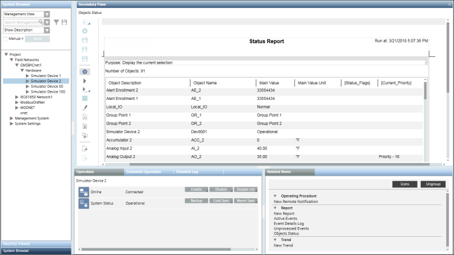

Run a Report
You can run a report using either of the following options:
Option 1: Using Toolbar Icons Run/Run As…
- You have selected a report definition that you want to run and the report definition displays in Edit mode.
- Do one of the following:
- Click Run
 to run the report definition according to your login language.
to run the report definition according to your login language. - Click Run As
 to run the report definition according to the selected language.
to run the report definition according to the selected language. - Localized data is retrieved and loaded in the cells of a table/plot in the report.
- The report execution status displays in the Report Management section below the report definition. On successful report execution, the generated report displays in Run mode.
Option 2: Using The Related Items Tab
- Select an object from System Browser. This object is set as the name filter for the report definition you want to execute.
- In the Related Items tab, select an icon/link for the report definition. For example, Object Status. Do not select an icon/link for New Report as this opens a new report definition.
- The selected report displays in the Secondary pane in Run mode. The selected object is set as the name filter for the tables and plots present in the report.
If the selected report in the Related Items tab is a related report for the selected System Browser object, then data is retrieved according to the name filters set for report elements.
However, if the selected report in the Related Items tab is a Show in Related Items report, the name filter configured for all the reporting elements in the generated report is replaced by the path of the selected object in System Browser
After running a report definition, should you decide to change some definition parameters, click Edit to toggle from Run mode to Edit mode in order to make your configuration changes.
to toggle from Run mode to Edit mode in order to make your configuration changes. - The report execution status displays in the Report Management section. On successful report execution, the generated report displays information related to the selected object.
